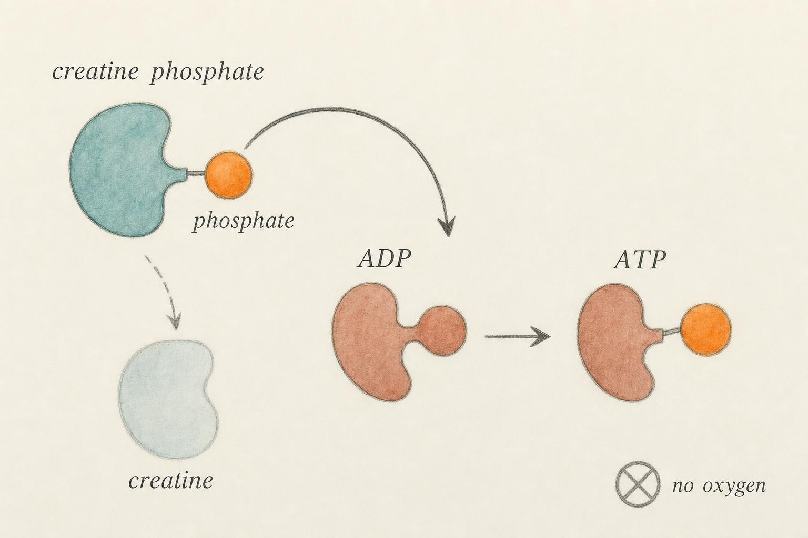

Instant Power: The Phosphagen System and the First Ten Seconds
How a tiny backup battery rebuilds your fuel faster than anything else in the body, and why it runs dry so fast.
A sprinter crouches in the blocks. The gun fires, and within a fraction of a second the muscles of the legs and hips are producing force at a rate that would have seemed impossible a moment earlier. Here is the puzzle you were left with at the end of the first chapter: the cell keeps only a whisper of ready fuel on hand, enough for perhaps two or three seconds of maximal contraction. So what powers second four, second five, second six? The stored fuel should already be gone. And yet the sprinter is still accelerating.
The answer is a rescue system so fast that most of us never notice it working. It has no moving parts you could point to, requires no breath of air, and finishes its job in the time it takes to read this sentence aloud. It is called the phosphagen system, and it is the reason explosive effort is possible at all.
A quick refresher: the currency and its cycle
Before we meet the rescue system, let us re-anchor the idea it rescues. Every muscle contraction is paid for in a single molecular currency called adenosine triphosphate, abbreviated ATP. The name describes its shape. A core structure, adenosine, carries a tail of three phosphate groups linked in a row. That third phosphate bond is where the useful energy sits. When a muscle needs to contract, an enzyme snips off that outermost phosphate, releasing energy the muscle machinery can use. What remains is adenosine diphosphate, abbreviated ADP, which is simply the same molecule now carrying only two phosphates instead of three, plus a loose phosphate group floating free, which chemists call inorganic phosphate.
So ATP is not really "used up" and thrown away. It is discharged, like a battery, into a lower-energy form. The whole trick of the energy economy is putting that third phosphate back on so the battery can be discharged again. This putting-back is called resynthesis, and it is the beating heart of the entire course. You have three separate systems capable of performing resynthesis, and they differ enormously in how quickly and how much they can do it. This chapter is about the fastest of the three.
To understand why that third phosphate bond is special enough to matter this much, it helps to look at the molecule itself. Adenosine triphosphate is built from three parts, a nitrogen-containing base called adenine, a five-carbon sugar called ribose, and a chain of three phosphate groups attached end to end. The bonds linking those phosphate groups are called phosphoanhydride bonds, and they are unusually reactive for a simple structural reason. Each phosphate group in the chain carries a negative electrical charge, and packing three of them side by side forces those charges into close, uncomfortable proximity, rather like compressing a spring. When an enzyme breaks the outermost phosphoanhydride bond, that strain is released, the resulting fragments separate and settle into more stable arrangements, and the reaction gives off usable energy. Biochemists quantify this release with a number called the standard free energy of hydrolysis, and for ATP breaking down to ADP and inorganic phosphate, a fragment usually abbreviated Pi, that value is approximately negative 30.5 kilojoules per mole under standard laboratory conditions. Inside an actual working muscle fiber the real number is considerably more negative, commonly estimated in the range of negative 50 to negative 60 kilojoules per mole, because the cell keeps ATP relatively concentrated while keeping both of its breakdown products, ADP and inorganic phosphate, comparatively dilute. Holding a reaction's products at low concentration like this is one of the cell's most basic tricks for keeping a reaction running strongly and irreversibly in the direction it needs to go.
Where does that released energy actually go inside the cell? Mechanically, its destination is a family of motor proteins called myosin, which project from thick protein filaments inside each muscle fiber and reach toward neighboring thin filaments built from a protein called actin. A myosin head binds a molecule of ATP, and a built-in enzymatic pocket on myosin itself, a myosin ATPase, splits off the terminal phosphate. That split cocks the myosin head like a loaded spring. When a nerve signal triggers a flood of calcium ions into the fiber, binding sites on the actin filament become exposed, the cocked myosin head attaches to actin, and the energy stored in the cocked position is released as a small rotation called the power stroke, which drags the actin filament a few nanometers past the myosin. Multiply that nanometer-scale tug across enormous numbers of myosin heads firing in rapid, overlapping succession along every fiber in an active muscle, and the sum is a whole limb shortening with visible, forceful speed. The point worth holding onto is that ATP hydrolysis is not an abstract accounting exercise happening somewhere off to the side. It is the literal molecular event, repeated without pause, that generates force, and every single power stroke consumes one molecule of ATP.
The reason speed of resynthesis matters so much is scale. During quiet rest your muscles turn over ATP at a leisurely pace, but at the onset of maximal effort the demand for ATP can rise by as much as one thousand times almost instantly (Baker et al., 2010). To put a number on the reserve that has to absorb that surge, resting human skeletal muscle holds only about five to eight millimoles of ATP per kilogram of wet muscle tissue, an amount so small that, left to itself with no resynthesis whatsoever, maximal contractile activity would exhaust it in one to two seconds. If resynthesis did not begin almost the moment the reserve started to fall, high-intensity movement would be over before it began.
The backup battery: creatine phosphate
Sitting inside your muscle fibers, in far greater quantity than ATP itself, is a molecule called creatine phosphate. You will also see it written as phosphocreatine, and the two names refer to exactly the same thing. We will use creatine phosphate and abbreviate it as PCr, following the common convention. Structurally it is a molecule of creatine carrying a single high-energy phosphate group, and that phosphate is held on a bond every bit as energy-rich as the one on ATP.
Here is the elegant part. Creatine phosphate cannot power a muscle contraction directly. The contractile machinery only accepts ATP. What creatine phosphate can do is hand its phosphate group to a waiting ADP, instantly rebuilding it into ATP. The reaction is catalyzed by an enzyme called creatine kinase, abbreviated CK, and it runs in a single step:
creatine phosphate plus adenosine diphosphate, in the presence of creatine kinase, becomes adenosine triphosphate plus free creatine.
Read that again and notice what it does not include. There is no oxygen. There is no glucose. There is no long assembly line of intermediate molecules. It is a direct transfer of one phosphate group from one molecule to another, mediated by one enzyme, in one move. That is why it is the fastest resynthesis reaction in the body. Wallimann and colleagues (2011) describe the creatine kinase and creatine phosphate system as a temporal energy buffer, meaning it exists precisely to smooth out sudden spikes in demand by donating phosphate the instant ATP starts to fall.
The design goes further than raw speed. Creatine phosphate and the creatine kinase enzyme are physically positioned right next to the sites where ATP gets consumed, close to the contractile filaments and the ion pumps that do the work (Baker et al., 2010). Because the rescue fuel is stored where it is needed, there is no delivery delay. Wyss and Kaddurah-Daouk (2011) argue that a central purpose of this arrangement is to prevent ADP from piling up locally, because rising ADP would otherwise inhibit the very enzymes that drive contraction. In other words, creatine phosphate does not only supply new ATP, it also clears away the spent ADP that would clog the machinery. It keeps the ratio of charged to discharged battery high exactly where the demand is highest.
It is worth being precise about how much backup fuel this actually represents. Resting human skeletal muscle stores creatine phosphate at a concentration of roughly twenty to twenty-five millimoles per kilogram of wet muscle tissue, which is three to four times greater than the resting store of ATP itself. Added together, the ATP already sitting in the fiber and the ATP that stored creatine phosphate can regenerate still amount to only a modest total energy reserve, enough to sustain maximal effort for a matter of seconds rather than minutes. The phosphagen system is best understood not as a large fuel tank but as a very fast, very small one, tuned for instantaneous availability rather than volume.
Not one enzyme, but a family stationed where it is needed
Creatine kinase is not a single uniform protein scattered randomly through the cell. It exists as a family of related forms, called isoenzymes, each built from slightly different protein subunits and each stationed at a different location for a different purpose. One form, built from two identical subunits called the M type, sits bound directly onto the contractile filaments themselves, right at the structure called the M-line that anchors the thick filaments in place, and another pool of the same M-type enzyme is bound to the calcium pump that relaxes the muscle after each contraction, a pump called the sarco/endoplasmic reticulum calcium adenosine triphosphatase, abbreviated SERCA. A separate form of creatine kinase, built largely from a different subunit called the B type or located in the mitochondria as a distinct mitochondrial isoenzyme, sits instead at the power-generating stations of the cell. Wallimann and colleagues (2011) describe this arrangement as a phosphocreatine shuttle, in which creatine phosphate manufactured near the mitochondria during recovery is physically carried across the cell to the contractile filaments and the calcium pumps, where a second population of creatine kinase waits to convert it back into ATP exactly where and when it is needed. The mitochondria, in other words, do not have to ship raw ATP itself across the whole length of the cell during recovery. They can ship the more diffusible creatine phosphate molecule instead, and let locally stationed creatine kinase finish the job on site. This is a genuine piece of cellular logistics, not a metaphor.
The enzyme's catalytic speed matches this positioning. Creatine kinase operates close to what biochemists call diffusion-limited kinetics, meaning the reaction proceeds about as fast as the two reacting molecules can physically bump into each other in solution, with almost no additional delay contributed by the chemistry itself. Combine an enzyme that fast with a fuel stored a few nanometers from where it will be spent, and the result is a resynthesis reaction with, for practical purposes, no measurable lag time at all.
A second, smaller rescue: the adenylate kinase reaction
Creatine kinase is not actually the only near-instant back-up available. A second enzyme, called adenylate kinase and also known by its older name, myokinase, catalyzes a different reaction that becomes important once ADP starts to accumulate faster than creatine phosphate alone can clear it. Adenylate kinase takes two molecules of ADP and converts them into one molecule of ATP plus one molecule of adenosine monophosphate, abbreviated AMP, which is the same adenosine backbone carrying only a single phosphate group. In effect, the enzyme salvages a bit of extra ATP by cannibalizing spent ADP, at the cost of generating a small pool of even more thoroughly discharged AMP.
That AMP is not simply discarded, and it is not metabolically silent. Rising AMP acts as a powerful signal inside the cell, activating an enzyme called 5' adenosine monophosphate-activated protein kinase, abbreviated AMPK, which functions as a kind of cellular energy alarm, flipping on processes that generate ATP and suppressing processes that consume it without being essential to the contraction itself. Some of that AMP is also stripped of its remaining nitrogen by an enzyme called AMP deaminase, producing a molecule called inosine monophosphate, abbreviated IMP, and releasing free ammonia as a by-product. This is, incidentally, the real biochemical source of the mild rise in blood ammonia that exercise physiologists sometimes measure after extremely intense, brief efforts. It is a sign that the adenylate kinase and AMP deaminase reactions have been called upon because the primary creatine kinase reaction alone could not keep pace with demand, and it is a useful reminder that the phosphagen system, fast as it is, still has a finite rate as well as a finite capacity.

The creatine kinase reaction hands a single phosphate group directly onto spent ADP." data-image-idx="1" style="display:block;max-width:100%;max-height:75vh;height:auto;width:auto;margin:0 auto;cursor:pointer;">Anaerobic means "without air"
We have used the word already, but it deserves a full definition because it organizes the rest of the course. A process is anaerobic when it proceeds without using oxygen. The phosphagen system is the purest anaerobic pathway in the body. It borrows no oxygen at any step and produces no carbon dioxide to breathe out. This is precisely why it can act so quickly.
To appreciate the advantage, consider what the alternative requires. The slowest and largest of the three resynthesis systems, the one you will meet later in the course, rebuilds ATP using oxygen inside specialized structures called mitochondria, running fuel through a long chain of dozens of enzyme-controlled reactions. That system can produce an enormous total quantity of ATP, but every step takes time, and oxygen has to be breathed in, carried by the blood, and delivered to the muscle before any of it can begin. When you launch out of the blocks, none of that machinery has had time to spin up. Your breathing rate and heart rate are still at resting values. The oxygen-based system is, in that instant, almost useless.
The phosphagen system has no such start-up cost. Because everything it needs is already sitting inside the muscle, charged and in position, it delivers full power from the very first millisecond of effort. Gastin (2001), in a review that has shaped how sports scientists think about this trade-off, calls the phosphagen system the alactic anaerobic system, meaning it regenerates ATP anaerobically and without producing lactic acid, distinguishing it from the second anaerobic system that does. For the opening seconds of any all-out effort, this alactic system is doing the overwhelming majority of the work (Gastin & Suppiah, 2026).
It is worth being concrete about just how slow the oxygen-based alternative is to switch on, because the gap explains why the phosphagen system is not a luxury but a necessity. Oxygen uptake at the lungs does not jump to its new required level the instant exercise begins. Instead it climbs along a curve with its own built-in lag, commonly modeled with a time constant on the order of ten to twenty-five seconds even in well-trained individuals, meaning it can take two to three minutes of continuous hard exercise before oxygen delivery and consumption fully catch up to the metabolic demand. Physiologists have a specific name for the shortfall that accumulates during that lag: the oxygen deficit, a concept dating back to early twentieth-century exercise physiology, describing the gap between the energy actually required by the working muscle and the energy that oxygen-based metabolism has managed to supply so far. Something has to cover that deficit while the oxygen-delivery machinery, the faster heartbeat, the deeper breathing, the widened blood vessels, gradually spins up. In the first handful of seconds, essentially all of that covering is done by the phosphagen system, with the second anaerobic pathway taking over an increasing share as the phosphagen system's own reserves start to run low.
None of this is a design flaw in the oxygen-based system. It is simply built for a different job. Aerobic metabolism runs inside dedicated cellular structures called mitochondria, using a long, carefully regulated sequence of enzyme reactions that require a continuous supply of oxygen delivered all the way from the atmosphere, through the lungs, into the blood, and out through capillaries into the muscle fiber. Building up flow through the whole of that delivery chain simply cannot happen in a fraction of a second, no matter how fit the athlete. The phosphagen system exists precisely to bridge that unavoidable start-up gap, and it does so by needing no delivery chain at all. Everything it requires is already present, in position, inside the cell before the starting gun even fires.
The central bargain: speed against capacity
Nothing in the energy economy comes free. The phosphagen system pays for its unmatched speed with a brutally small capacity. Your muscles simply do not store very much creatine phosphate. During all-out effort, the concentration of creatine phosphate inside a working muscle fiber falls to less than thirty percent of its resting level within seconds, and in the most intense efforts it can approach near-total depletion (McMahon & Jenkins, 2002). Once the creatine phosphate is spent, the phosphate donor is gone, and the reaction that made ATP so quickly grinds to a halt.
How long does the tank last? Under genuinely maximal effort, the phosphagen system can sustain peak power output for only about ten seconds, and its contribution is already declining well before that mark. Historically, physiologists believed creatine phosphate was the sole ATP regenerator for the first ten to fifteen seconds of exercise (Baker et al., 2010), and while we now know the picture is more of a blend than a clean handoff, the timescale is right. This is why a shot put throw, a maximal single lift, a standing long jump, and the first stride of a sprint all feel like they draw from the same well. They do.
Here is the bargain stated plainly, and it is the theme that will echo through every remaining chapter. The phosphagen system offers the highest power output of any resynthesis system, meaning the fastest rate of ATP production, but the lowest total capacity, meaning the smallest total quantity it can ever produce. Gastin (2001) framed the entire family of energy systems along exactly this axis: the anaerobic pathways regenerate ATP at very high rates but are sharply capacity-limited, while the oxygen-based system has vast capacity but cannot deliver energy quickly. No system is best. Each buys a different balance of speed, power, and endurance, and your body is constantly negotiating which one to lean on.
Sahlin (2014) adds an important nuance to why the tank empties. It is not only that the creatine phosphate is used up. As it breaks down, the reaction leaves behind accumulating by-products, including free creatine and inorganic phosphate. That rising inorganic phosphate is itself thought to interfere with force production. So performance during explosive effort is limited both by the depletion of the fuel and by the litter left behind, a double constraint that sets a hard ceiling on how long maximal power can last.
What the depletion curve actually looks like
These are not abstract claims. They come from studies that took small muscle samples, called biopsies, from athletes before and immediately after standardized bouts of running or cycling, then measured creatine phosphate concentration directly in the tissue. In a classic study of this kind, Hirvonen and colleagues (1987) had sprinters run all-out over distances of forty, sixty, eighty, and one hundred meters and biopsied the thigh muscle immediately afterward. Creatine phosphate was already reduced by roughly half after just forty meters, a distance covered in around five to six seconds, and by the time runners reached one hundred meters, roughly ten seconds for a trained sprinter, creatine phosphate stores were close to fully depleted. The decline was not linear. The steepest drop happened earliest, precisely when power output is at its highest, which fits the simple logic that the fastest drain on any tank occurs when the tap is opened widest.
A complementary picture comes from short maximal cycling tests, often called Wingate tests after the institute where the protocol was developed, in which a rider pedals as hard as possible against fixed resistance for thirty seconds. Peak power is reached within the first one to two seconds, and by the time the effort reaches thirty seconds, power output has typically fallen to something like half of that opening peak. Bogdanis and colleagues (1995) traced this decline directly to phosphocreatine availability, showing that muscle creatine phosphate is reduced by more than half within the first six seconds of such an effort and is close to fully exhausted by the thirty second mark, tracking almost exactly with the falling power curve measured at the pedals. The lesson from both lines of evidence is the same. Peak power and full creatine phosphate stores arrive together, at the very start of a maximal effort, and both decline together as the seconds pass, which is exactly what you would predict from a resynthesis reaction whose donor molecule is being consumed and not yet replaced.
Why some fibers store more of it than others
Not all muscle fibers are built the same way, and the phosphagen system is distributed unevenly across fiber types as a direct consequence. Skeletal muscle contains a mix of fiber types, broadly grouped into slow-twitch, oxidative fibers, sometimes called Type I fibers, which are built for sustained, lower-intensity work and are rich in mitochondria, and fast-twitch, more glycolytic fibers, sometimes called Type II fibers, which are built for brief, powerful bursts. Casey and colleagues (1996) measured resting creatine phosphate concentration and creatine kinase activity separately in samples enriched for each fiber type and found that Type II fibers carry both a higher resting creatine phosphate concentration and substantially greater creatine kinase activity than Type I fibers. This is not a coincidence. It is the same design logic scaled down to the level of an individual fiber. A fiber whose job is to produce very high force very quickly, and then rest, is built with a larger, faster-acting phosphagen system, exactly the tool suited to its task, while a fiber built for endurance leans instead on its abundant mitochondria and comparatively modest phosphagen reserves. This is one reason athletes with a higher proportion of fast-twitch fibers, often built that way substantially through genetics, tend to show both greater peak power output and a faster rate of phosphocreatine depletion during maximal effort than athletes whose muscle is dominated by slow-twitch fibers.
Reading the trade-off in the widget
If you experimented above, you will have noticed something worth naming. At all-out intensity, the tank empties in roughly ten seconds and power falls off a cliff. Drop the intensity, and the same amount of stored creatine phosphate lasts far longer, because you are drawing on it more gently and the slower resynthesis systems can keep pace with a larger share of the demand. This is the trade-off made tangible. Capacity is fixed, but how fast you spend it is your choice, and the two together determine how long the fastest system can carry you.
Notice also that the simulation does not model a hard, all-or-nothing cutoff. Power fades gradually as the tank empties rather than switching off like a light. Real muscle behaves the same way, because as creatine phosphate concentration falls, so does the rate at which the creatine kinase reaction can regenerate ATP, since that rate depends in part on how much donor fuel is still available to react. A half-empty tank does not produce half of maximal power forever, it produces a steadily shrinking fraction of it, which is exactly why sprint times and lifting bar speed both show their steepest declines right when phosphocreatine is running lowest.
Which activities live here
The phosphagen system is not an abstraction reserved for laboratory sprints. It is the dominant supplier of energy for a specific and recognizable family of movements, all of which share two features: very high force or velocity, and very short duration. A shot put or discus throw is over in about a second, and is powered almost purely by stored ATP and creatine phosphate. A maximal single repetition in the gym, whether a heavy squat, deadlift, or press, draws on the same source. The launch phase of a sprint, a maximal vertical jump, a golf drive, a baseball swing, an Olympic lift, a boxer's single hardest punch, each of these is an explosive event completed before the slower systems can meaningfully contribute (Gastin & Suppiah, 2026).
It helps to walk through a couple of these in more detail, because the timing lines up with the biochemistry with almost eerie precision. A maximal vertical jump, from the moment the knees begin to bend to the moment the feet leave the ground, is typically complete in well under half a second. A heavy single repetition in the deadlift or back squat, even a grinding one that feels like it takes forever, is mechanically finished in something like three to six seconds from first pull to lockout. A one hundred meter sprint at the elite level is over in under ten seconds, which is not a coincidence but very nearly the exact outer edge of what the phosphagen system alone can underwrite. Watch the split times of a world-class sprint race and you will see the pattern directly: acceleration is sharpest in the opening meters, when phosphagen stores are still close to full, and even the very best sprinters are demonstrably decelerating, ever so slightly, by the final third of the race, right as creatine phosphate reserves are running low and the slower glycolytic system has to pick up a growing share of the load. None of these athletes are running out of willpower in that final stretch. They are running out of donor phosphate.
Notice the pattern in reverse as well. As soon as an effort extends past roughly ten to fifteen seconds at high intensity, the phosphagen system can no longer be the main provider, because its tank is running dry. A four hundred meter run, which takes most trained runners somewhere between forty-five seconds and a little over a minute, has long since exhausted its creatine phosphate and is relying heavily on the next system. Even a two hundred meter sprint, finished in under twenty-five seconds by elite athletes, spends its second half leaning increasingly on glycolysis rather than the phosphagen system, which is one reason the back half of a two hundred meter race so reliably looks and feels harder than the front half even though the pace barely changes on paper. This is why event distance and duration map so cleanly onto energy system dominance, a mapping we will return to repeatedly.
Three systems, one continuous blend
It would be easy to walk away from the last two sections with a tidy but slightly wrong picture in your head, one in which the phosphagen system runs at full strength for exactly ten seconds and then switches off like a relay baton being passed to the next runner. The truth, as Gastin and Suppiah's more recent systematic review makes clear, is messier and more interesting than that. All three resynthesis systems are active from essentially the first moment of any intense effort. What changes over time is not which single system is switched on, but the proportion of the total ATP bill that each system is covering at any given instant.
In the very first second of a maximal contraction, the phosphagen system is doing something close to all of the work, simply because it is the only pathway fast enough to have responded yet. By two or three seconds in, the second anaerobic system, which breaks down stored carbohydrate and is the subject of the next chapter, has already begun contributing a meaningful share. By ten seconds, that second system may be supplying close to half of the total energy, even though the phosphagen system has not yet been fully exhausted. The oxygen-based system, slowest of all to respond, is contributing only a small fraction in these opening seconds, but that fraction is not zero, and it grows steadily larger the longer the effort continues. Rather than three discrete relay legs run one after another, picture three overlapping waves rising and falling on their own separate timescales, layered on top of each other, with their sum always adding up to whatever total rate of ATP resynthesis the working muscle demands at that instant.
This blended, continuous view does not overturn anything you have learned in this chapter. The phosphagen system genuinely is fastest, genuinely has the smallest capacity, and genuinely dominates the earliest fraction of a second of maximal effort. What the blended view adds is honesty about the edges of the model. Treating energy system contribution as a sharp step function, one system fully on and then fully off, makes for a clean diagram, but real muscle metabolism is a smooth, overlapping handoff rather than a light switch, and keeping that nuance in mind will save you from overreading any single number, including the frequently repeated shorthand that the phosphagen system lasts exactly ten seconds. Ten seconds is a genuinely useful approximation of when phosphagen dominance fades, not a precise deadline printed somewhere on the muscle fiber.
Refilling the tank, and a few myths to retire
The story does not end when the creatine phosphate runs out, because the system is rechargeable. Once effort eases, the creatine kinase reaction runs in reverse. Now ATP donates a phosphate back to free creatine, rebuilding creatine phosphate and restocking the tank for the next explosive effort. Crucially, this recharging depends on the oxygen-based system, which is why recovery from a sprint leaves you breathing hard even after the sprint itself needed no oxygen (McMahon & Jenkins, 2002).
Recovery happens in two phases. A fast phase, driven by the fall in ADP once contraction stops, restores much of the creatine phosphate within roughly a minute or two. A slower phase, governed largely by how acidic the muscle has become, can take several more minutes to finish the job (McMahon & Jenkins, 2002). This is the physiology behind rest intervals in interval training: give the fast phase time to work, and each subsequent explosive effort can be nearly as powerful as the first.
It is worth putting rough numbers on those two phases, because they are what actually determine how a coach or athlete schedules rest between hard efforts. The fast component of phosphocreatine resynthesis proceeds with a half-time, meaning the time required to restore half of whatever was depleted, commonly estimated in the range of twenty to sixty seconds, so that within roughly two to three minutes most of the phosphagen pool is back near its resting level. Bogdanis and colleagues (1995) documented this directly after thirty-second maximal cycling efforts, showing substantial creatine phosphate recovery within the first several minutes but also showing that recovery is not complete even by six minutes, particularly for the last small fraction of the pool. This is precisely why the same person can produce nearly identical peak power on a second sprint taken after three or four minutes of rest, yet shows a clearly blunted peak if the second sprint is attempted after only thirty seconds. It also explains a detail coaches learn quickly by experience even without knowing the underlying chemistry: the rate of this recovery is not fixed for everyone. It depends heavily on local blood flow and on the oxidative capacity of the muscle, meaning that individuals with a higher density of mitochondria and better-developed local circulation, often a hallmark of aerobic training, tend to resynthesize creatine phosphate faster than individuals without that oxidative background. Explosive-sport athletes who neglect aerobic conditioning entirely can therefore find themselves at a real disadvantage in any event that requires repeating maximal efforts with short recoveries, since the very engine that recharges their phosphagen system is the one they trained the least.
This recovery process is also the more accurate, more limited story behind an idea that used to be presented with far more confidence than it deserved. Early exercise physiologists, most notably A. V. Hill in the 1920s, described an oxygen debt incurred during hard exercise and repaid afterward through elevated breathing during recovery, and for decades this was taught as though the entire elevation in post-exercise oxygen consumption existed purely to resynthesize phosphocreatine and clear lactate. The modern term for this elevated recovery oxygen consumption is excess post-exercise oxygen consumption, abbreviated EPOC, and it is real and measurable, but it is now understood to be a more complicated phenomenon than a simple debt with a single cause. Only a portion of EPOC is attributable to phosphocreatine resynthesis and the modest cost of clearing metabolic by-products. Meaningful additional portions come from elevated body temperature, circulating stress hormones such as adrenaline, and a generally elevated resting metabolic rate that can persist for a period after intense exercise ends. Phosphocreatine resynthesis genuinely happens during this window, and it genuinely does require oxygen, but it would be an overstatement to claim it as the whole explanation for why you keep breathing hard for several minutes after a hard sprint. Good physiology, here as elsewhere, means being willing to keep a partial explanation and drop the tidier, more totalizing one.
This is also the right moment to correct a myth you have almost certainly heard. The burning and soreness that follow hard exercise are frequently blamed on lactic acid, and the phosphagen system's by-products are sometimes lumped into the same story. Both ideas need care. The alactic phosphagen system, by definition, does not produce lactic acid at all. And the muscle soreness that shows up a day or two after unfamiliar exercise, properly called delayed onset muscle soreness, is not caused by lactic acid either. Lactate is cleared from the blood within an hour or so of stopping, long before that soreness peaks. Delayed onset muscle soreness instead traces back to mechanical microdamage at the level of the contractile filaments themselves, particularly disruption of a structure called the Z-disk that anchors the ends of the contractile units, an effect seen most strongly after unfamiliar movements or after emphasizing the lengthening, eccentric phase of a contraction, such as the lowering portion of a heavy squat. That microscopic damage triggers a local inflammatory response over the following day or two, and it is this repair process, the swelling, the sensitized nerve endings, the local immune cell activity, that produces the familiar stiffness and tenderness, not any lingering acid. When we reach the glycolytic system in the next chapter we will treat lactate honestly, as a useful fuel and a symptom of intensity rather than a villain.
Where the backup fuel itself comes from
It is worth stepping back to ask where all this creatine actually originates, since the body does not receive it ready-made from nowhere. Creatine is synthesized endogenously, meaning made by the body itself, chiefly in the liver, kidneys, and pancreas, starting from three ordinary amino acids, arginine, glycine, and methionine. Two enzymes carry out the necessary steps, one called arginine:glycine amidinotransferase, abbreviated AGAT, working mainly in the kidney, and a second called guanidinoacetate N-methyltransferase, abbreviated GAMT, working mainly in the liver. The finished creatine molecule then travels through the bloodstream to skeletal muscle, where it is pulled into the muscle fiber by a dedicated transport protein embedded in the cell membrane, the creatine transporter, sometimes labeled CreaT and identified by the gene symbol SLC6A8. Diet supplies additional creatine directly, chiefly from meat and fish, which is one reason strict vegetarians and vegans, who obtain none of their creatine this way, tend to start from a somewhat lower baseline muscle creatine phosphate concentration than habitual meat eaters, relying entirely on their own endogenous synthesis to fill the tank.
That transporter has a ceiling. Muscle cannot accumulate unlimited creatine no matter how much arrives at the membrane, because the transporter itself becomes saturated once intracellular creatine concentration climbs high enough. This is precisely why the molecule at the center of this chapter, creatine, is also among the most thoroughly studied nutritional aids in sport. Raising the amount of creatine available to the transporter through dietary supplementation reliably raises resting muscle creatine phosphate concentration, generally by something on the order of ten to forty percent depending on an individual's starting level, and the logic connecting that fact back to everything covered in this chapter is direct: a larger phosphagen tank can sustain explosive power output for slightly longer before it runs dry, and a larger tank also has more absolute capacity to draw on during the recovery phases between repeated maximal efforts. The position statement of the International Society of Sports Nutrition, authored by Kreider and colleagues (2017), concludes that creatine monohydrate supplementation is among the most effective and most extensively researched ergogenic aids available to athletes, with an especially strong evidence base for improving performance in short-duration, high-intensity, and repeated-sprint activities, which is exactly the domain governed by the phosphagen system described in this chapter. That same position statement also notes that not everyone responds equally, since people who already start with high muscle creatine stores, which varies naturally between individuals and tends to be lower in habitual non-meat eaters, generally see a smaller further increase than people starting from a lower baseline. This chapter describes how the underlying system works and why a larger phosphagen reserve would be expected to help; it is not offering a dosing protocol, and decisions about supplementation, like decisions about any substance taken regularly, are worth making with attention to your own individual circumstances. If you ever suspect an underlying metabolic or thyroid problem is shaping how you produce or recover energy, that is a matter for evaluation by a qualified health professional, not something to self-diagnose from a textbook.
The anaerobic pathways can regenerate ATP at very high rates yet are limited in capacity, whereas the aerobic system has enormous capacity but is unable to deliver energy at high rates.
Paraphrased from Gastin (2001), on the speed-versus-capacity trade-off
Key Takeaways
- Muscle contraction spends adenosine triphosphate, converting it to adenosine diphosphate plus a loose phosphate; the whole energy economy is about putting that phosphate back, a process called resynthesis.
- The phosphagen system rebuilds adenosine triphosphate in a single step: creatine phosphate donates its phosphate to adenosine diphosphate, catalyzed by creatine kinase, restoring adenosine triphosphate and leaving free creatine.
- This pathway is fully anaerobic, meaning it needs no oxygen, which is why it delivers full power from the first millisecond of effort before breathing or the oxygen-based system can respond.
- Its defining bargain is speed against capacity: the highest power output of any system, but a tank so small it empties in roughly ten seconds of maximal work.
- It dominates explosive, short-duration events such as throws, maximal lifts, jumps, and sprint starts, and it recharges afterward using oxygen, which is why recovery leaves you breathless.
- The phosphagen system produces no lactic acid, and delayed muscle soreness is caused by mechanical microdamage and repair, not by acid buildup.
- All three resynthesis systems overlap from the first instant of effort; the ten-second figure describes when phosphagen dominance fades, not a hard cutoff, and a smaller back-up reaction, adenylate kinase, helps cover ATP demand once ADP starts to accumulate.
- Muscle creatine phosphate is resynthesized in a fast phase, largely complete within two to three minutes, and a slower phase that can take several more minutes, which is the physiological basis for rest-interval design in interval and strength training.
- Creatine is made by the body from three amino acids and is also obtained from meat and fish; dietary creatine supplementation raises muscle phosphocreatine stores and is among the best-supported ergogenic aids for short, repeated, high-intensity efforts.
Once the ten-second tank runs low but the effort continues, your body cannot yet call on the slow oxygen-based system for enough power. It reaches instead for a second anaerobic pathway, one that breaks down stored carbohydrate to keep the phosphate flowing. It is slower than the phosphagen system but far larger, and it comes with a famously misunderstood by-product. In the next chapter we meet glycolysis, the system that carries you from ten seconds out to a minute or two of hard work.
References
Baker, J. S., McCormick, M. C., & Robergs, R. A. (2010). Interaction among skeletal muscle metabolic energy systems during intense exercise. Journal of Nutrition and Metabolism, 2010, 905612. https://doi.org/10.1155/2010/905612
Bogdanis, G. C., Nevill, M. E., Boobis, L. H., Lakomy, H. K., & Nevill, A. M. (1995). Recovery of power output and muscle metabolites following 30 s of maximal sprint cycling in man. Journal of Physiology, 482(Pt 2), 467-480.
Casey, A., Constantin-Teodosiu, D., Howell, S., Hultman, E., & Greenhaff, P. L. (1996). Metabolic response of type I and II muscle fibers during repeated bouts of maximal exercise in humans. American Journal of Physiology, 271(1 Pt 1), E38-E43.
Gastin, P. B. (2001). Energy system interaction and relative contribution during maximal exercise. Sports Medicine, 31(10), 725-741. https://doi.org/10.2165/00007256-200131100-00003
Gastin, P. B., & Suppiah, H. (2026). Anaerobic and aerobic energy system contribution during maximal exercise: A systematic review. Sports Medicine. Advance online publication. https://doi.org/10.1007/s40279-026-02414-7
Hargreaves, M., & Spriet, L. L. (2020). Skeletal muscle energy metabolism during exercise. Nature Metabolism, 2(9), 817-828. https://doi.org/10.1038/s42255-020-0251-4
Hirvonen, J., Rehunen, S., Rusko, H., & Harkonen, M. (1987). Breakdown of high-energy phosphate compounds and lactate accumulation during short supramaximal exercise. European Journal of Applied Physiology and Occupational Physiology, 56(3), 253-259.
Kreider, R. B., Kalman, D. S., Antonio, J., Ziegenfuss, T. N., Wildman, R., Collins, R., Candow, D. G., Kleiner, S. M., Almada, A. L., & Lopez, H. L. (2017). International Society of Sports Nutrition position stand: Safety and efficacy of creatine supplementation in exercise, sport, and medicine. Journal of the International Society of Sports Nutrition, 14, 18. https://doi.org/10.1186/s12970-017-0173-z
McMahon, S., & Jenkins, D. (2002). Factors affecting the rate of phosphocreatine resynthesis following intense exercise. Sports Medicine, 32(12), 761-784. https://doi.org/10.2165/00007256-200232120-00002
Sahlin, K. (2014). Muscle energetics during explosive activities and potential effects of nutrition and training. Sports Medicine, 44(Suppl. 2), 167-173. https://doi.org/10.1007/s40279-014-0256-9
Wallimann, T., Tokarska-Schlattner, M., & Schlattner, U. (2011). The creatine kinase system and pleiotropic effects of creatine. Amino Acids, 40(5), 1271-1296. https://doi.org/10.1007/s00726-011-0877-3
Wyss, M., & Kaddurah-Daouk, R. (2011). The creatine kinase reaction: A simple reaction with functional complexity. Amino Acids, 40(5), 1247-1253.